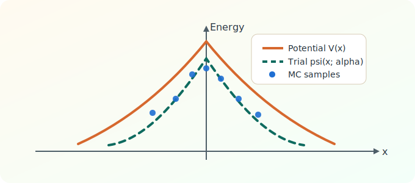

pyQMC: VMC Playground
This interface runs an educational Variational Monte Carlo simulation for the 1D harmonic oscillator using either direct local compute or API transport.
Compute mode: (resolving...) | Active transport: (idle) | API fallback: (resolving...)

Learning Primer
This simulation uses Variational Monte Carlo (VMC) to estimate the ground-state energy of a 1D harmonic oscillator.
- Physics: the parabola is the oscillator potential V(x)=x^2/2.
- Modeling: the Gaussian curve is the trial wavefunction controlled by alpha.
- Monte Carlo: sampled points estimate the expectation value of the local energy.
Simulation Settings
Result
Run a simulation to see output.
Educational Notes
- Exact ground-state energy in these units is 0.5.
- For this trial wavefunction family, alpha ≈ 1 is optimal.
- If alpha = 1.0, the local energy is exactly constant, so even small sample counts can show near-zero error.
- If acceptance ratio is very low, try reducing step size. If it is very high, you may increase step size for better exploration.